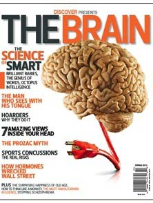
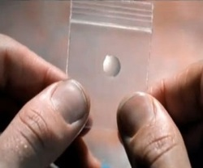

In this issue of Discover includes a Special Offer Inside! This Offer Is Only Available Online! SmartX
*NOTE: You must use this product as directed to achieve the same results. This Exclusive Offer is Limited Due to Overwhelming Demand. Valid Today Only!
Reviewed In This Article
Taking this product daily produce’s amazing results
For a limited time get a Discount bottle of SmartX. Hurry supplies are limited and will run out fast.

‘Welcome To The Future’ – American business magnates, investors and Billionaires don’t let there age affect any of there decision making or business solutions. Instead, they rely on a lesser known “secret” to aid them where they are now today. The secret? A brain pill. Other business moguls admitted to using this product to help keep their minds intact. We’re not saying you can be rich like these billionaires instantly, but it will enhance your memory, critical thinking, analyzing/interpreting ability, and creation of new ideas, which will lead you to the right path of success. It’s called SmartX (medical name: E-Huperzine).
There’s already been previous controversy around the memory-enhancing pill which was the inspiration for the movie Limitless. Heavily praised by Scientists as ‘the missing link in human evolution’ in there report as ‘Boosting the Brains Potential’, when released, the use of SmartX became widespread amongst young professionals.
SmartX soon became known as the ‘most powerful self-development trick on earth’. Not long after, everyone from quiz show contestants to university students were taking the pill to get better grades, triple their salary and achieve peak performance in little time. SmartX, which has no recorded side effects in any trials, was soon the target of several major pharmaceutical companies who claimed it gave people an unfair advantage over anyone who was unaware of its existence. The pill was eventually banned on shows like Jeopardy! and at top universities such as Cambridge before production of the limitless pills were halted.
After several years and over 2000 trials at The Nottingham Clinical Trials Unit (NCTU), SmartX pills are back in production and recent reports are proving the superhero making drug is more powerful then ever. The secret to pill’s improved formula? B6.
Yes, you read that right: B6 has been praised for its ability to rejuvenate and heal the mind for centuries. Combining this with the already powerful ingredients of SmartX, and your mind will be clearer then that of a Zen-monk’s. Your ability to focus and power through your to-do list will also be a thing of the past and after consistent use, you will become the perfect version of yourself. Many people thought something like this wouldn’t exist for another hundred years but as Dr Raqif said: welcome to the future.
Critics of the pill are of course making their voices heard and if the effectiveness of SmartX is stronger then it previously was then these will not be around much longer. With such a powerful opportunity to lower your stress levels, master your emotions and triple your salary, it’s only a matter of time before SmartX pills are once again the target of major pharmaceutical companies who are seeing a decline in their profit.
With so much media praise and countless reviews of people experiencing success with SmartX, The Discover Magazine wanted to verify whether this was all hype. After almost every single man in the building volunteered to test it out but we chose our Senior Chief Editor Alan Frasier. Below is his account of using SmartX over a 4 week period.
The SmartX pills were extremely hard to come by. We had to wait 2 weeks before we got a bottle to test as it was sold out almost everywhere or over $300 a bottle from people trying to sell it for profit ebay. People were paying top dollar for them on there.
I took the recommended dosage and maybe 20-30 minutes later I felt odd. I can only describe it by saying my mind felt calm and still. It was like that feeling you get when you have just woken up. Light headed so to speak but this was different. I was light headed and spaced out but in the zone at the same time. Can’t explain it – but it was awesome.
Over the course of the 4 weeks I found myself bouncing out of bed and felt ready to take on the day – usually I need to snooze 3 times. I felt motivation to get stuff done and often power through.
Thing’s that annoyed me were no longer an issue. I hardly got stressed and when I did, I was able to control my emotions and get back into peak performance and state.
My thoughts on SmartX are that, the pills are the real deal. I’ve tried modafinil and other smart drugs but this is by far the closest thing to feeling like you are Bradley Cooper from Limitless.
If you happen to come across these, you can move on with your day and go about your life or you can spare 2 minutes and take what is the most important step to becoming the man you want to be.
**Because of recent coverage in the media, supplies are running very low. You can check to see if SmartX is still available.
Reviewed In This Article
Taking this product daily produce’s amazing results
For a limited time get a Discount bottle of SmartX. Hurry supplies are limited and will run out fast.
- Sky-rocket Concentration
- Improve Creative Thinking
- Boost Energy
- Enhance Memory Recall
- Elevate Work Productivity
When SmartX was originally banned a lot of people were angry. There were no side effects then and as it stands there are no side effects with the stronger formula. Here are clinical studies of the main ingredients in this product (Clinical Study #1, Clinical Study #2). That said, all our users followed the directions and did not go overboard so it’s strongly recommended to use common sense when taking these.
SmartX is the only pill of it’s kind where the user benefits and grows the more he takes. Normally the body gets used to most medications but throughout all trials all users made continued progress as the weeks went on. In regards to whether these should be legal? Yes they should. In fact, they never should have been banned. The truth is the ‘health and safety’ of the product was never a concern. Major competing companies created uproar due to their heavily sinking profits when SmartX was becoming widely used. Even more companies are joining in this time so we have no doubt that production of SmartX pills will be stopped once again. The question is, will you be one of the lucky few who have their hands on the next step of human evolution? James Rickman, The Discovery Magazine
The first day of taking SmartX was an experience in itself. I started to feel a sense of calm after about 15 minutes. 30 Minutes later I had what felt like 360 degrees vision. My mind was clear and calm. Nothing like coffee. After one week of using SmartX my energy levels are up, and it’s not like a typical coffee rush. This is a smooth boost of long-lasting, natural energy without the crash… I love it! My brain honestly felt CLEAR for the first time in years, and this was just after a few short days. I woke up today (day 7) feeling like a new and improved me. I had one of the most productive weeks I could remember and felt like I owed it all to this tiny pill. But I was still a little skeptical. To be honest, i’m still a little skeptical. If this week wasn’t a fluke things are definitely looking up for me But I am reserving judgement.
After two weeks of using SmartX, I’m feeling even more focused and energized than before. Today I had what I would have called a “long day” and it hasn’t even bothered me! I’m more focused right now (after a 10hr work day) than I would normally be waking up. I’m bouncing out of bed. I wake up earlier without an alarm. It’s great. I always woke up lethargic and like a zombie. Thinking about it now, that hasn’t happened once. I literally wake up and i’m ready to take on the day. It’s a truly unique experience. My focus and concentration is pretty damn good. But I found I need to set alarms otherwise it is very easy to get carried away. Yesterday I want meant to meet some friends but was so absorbed in work. Good thing for focus. But alarms are a must. My stress levels also seem down. Not sure if this is unrelated as I haven’t been as stressed since I started this. So not sure if it is because of the pill that I am not stressed or not.
I looked back on my results at the end of this week and realized that this is the read deal! Well done. I am very happy right now. Haven’t stopped smiling. I’m just always on. I’m always in control. Yesterday at work we had a major project deadline we weren’t going to hit and I was the only one who was in control out of the entire team. Including my boss. I literally feel like I am mastering my emotions. I’m still experiencing a climb in focus and my memory is sharper than ever too. Around the third week of using any supplement, I would expect to run out of steam due to the body getting used to the ingredients. But my energy levels haven’t dipped at all. They remain steady throughout the day. I no longer need that cat nap around 3 p.m. in the afternoon!
After the fourth week, my final results were amazing. My memory is crystal-clear, and my levels of focus and concentration have been through the roof! Even though my test is over, with the results I’ve experienced over the last month I am obviously going to continue taking SmartX if possible. Side effects wise: none but you need to set an alarm to remind yourself of other work that needs to be done. You could get wrapped up in a passion project very easily. I love this stuff. I have no stress these days, I sleep less, wake up ready and energized and as for the brain games I have been playing…my scores have tripled which is awesome! love seeing the graph and how it shows my memory has sky rocketed. Hands down, the best decision I made was ordering a bottle. I plan to use these for the rest of my life is possible. Otherwise I would feel like a God who lost his powers! Ok that’s a bit dramatic but the point is, these are great. Well done once again.
SmartX Terms & Privacy Policy
SmartX Terms & Conditions
SmartX Privacy Policy
Content Paid and Sponsored by: SmartX
THIS IS AN ADVERTISEMENT AND NOT AN ACTUAL NEWS ARTICLE, BLOG, OR CONSUMER PROTECTION UPDATE
**This page receives compensation for clicks on or purchase of products featured on this site.
Representations regarding the efficacy and safety of SmartX have not been evaluated by the Food and Drug Administration. The FDA only evaluates foods and drugs, not supplements like these products. These products are not intended to diagnose, prevent, treat, or cure any disease. Click here for Phosphatidylcholine and Click here for Bacopin to find evidence of a test, analysis, research, or study describing the benefits, performance or efficacy of Phosphatidylcholine and Bacopin based on the expertise of relevant professionals.
“The story depicted on this site and the person depicted in the story are not real unless stated otherwise. Rather, this story is based on the results that some people who have used these products have achieved. The results portrayed in the story and in the comments are illustrative, and may not be the results that you achieve with these products. This page receives compensation for clicks on or purchase of products featured on this site.”
We are not affiliated in any way with CNN, WebTV, News Channel 7, ABC, NBC, MSNBC, USA Today, BBC, 60 Minutes, CBS, U.S. News or FOX. CNN, WebTV, News Channel 7, ABC, NBC, MSNBC, USA Today, BBC, 60 Minutes, CBS, U.S. News and FOX are all registered trademarks of their respective owners. All trademarks on this web site whether registered or not, are the property of their respective owners. The authors of this web site are not sponsored by or affiliated with any of the third-party trade mark or third-party registered trade mark owners, and make no representations about them, their owners, their products or services.
All trademarks on this site whether registered or not are the property of their owners. The authors of this site are not sponsored or affiliated with any of the 3rd party trademark or owners and make no representation about them, their owners, products or services.